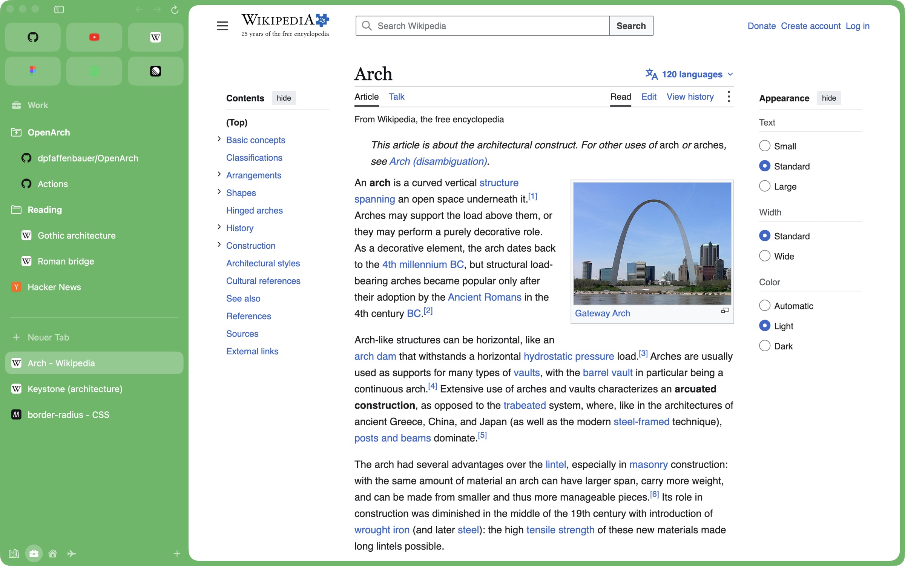
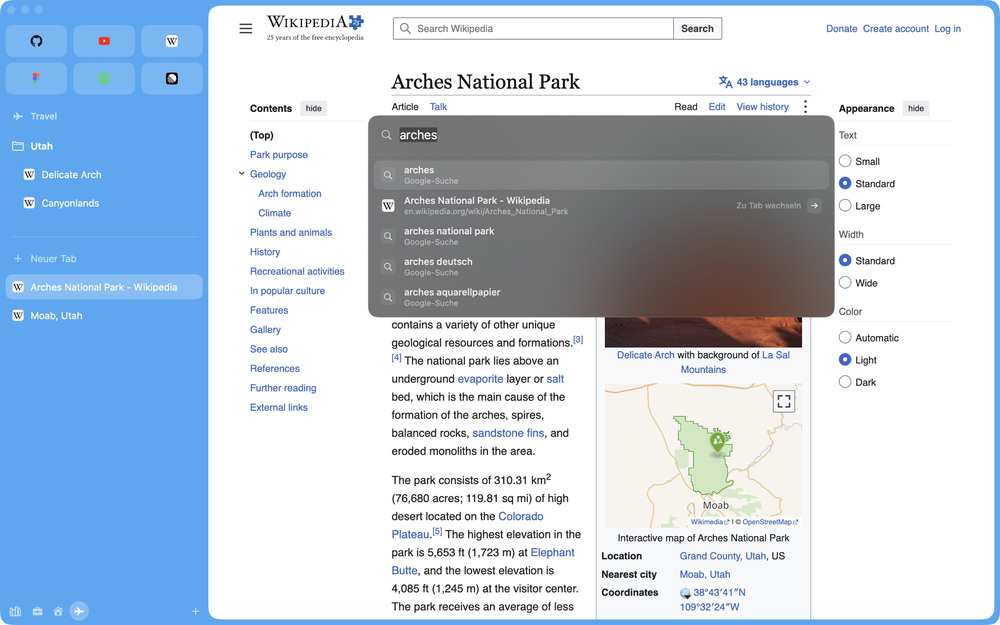
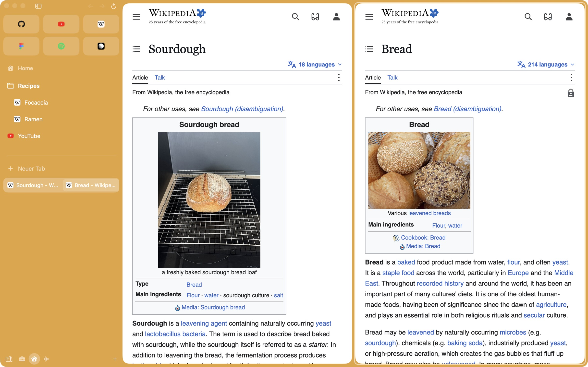
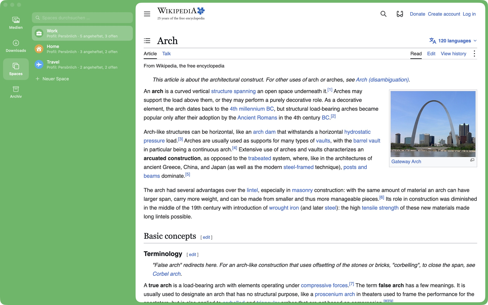

Arc stops working on December 22, 2026
Arc closes.
OpenArch opens.
The sidebar browser you know, rebuilt as open source on real Chrome. Your spaces, logins and extensions move over in one step.
Everything comes along.
OpenArch reads your Arc data right on your Mac. No account, no upload, and Arc stays as it was.
- Spaces with their themes
- Favorites
- Pinned tabs & folders
- Open tabs & split views
- Logins & cookies
- Saved passwords
- History
- Extensions & their settings
Before Arc goes, Settings › Import › Back up Arc data saves its own files as a zip. How the move from Arc works
Coming from somewhere else?
Bookmarks and history come over from every browser on your Mac. Each browser profile becomes a space of its own.
- Chrome
- Edge
- Brave
- Vivaldi
- Opera
- Dia
- Helium
- Comet
- Firefox
- Zen
- Safari
From Chrome and the browsers built on it, your logins and saved passwords come too. Passwords from Firefox, Safari, 1Password or Bitwarden import from their CSV export.
The other browsers stay as they were. How the move from another browser works
Set up before the first tab opens.
The first time OpenArch opens, a small window walks you through it. A couple of minutes, and every step can be skipped.
Bring your Arc
Your spaces, favorites and pinned tabs build up in front of you, without a restart.
One question from macOS
It asks once for Arc’s key in your keychain, so your logins come along.
Spaces and accounts
See which Google account each profile is signed in to, and sign in where one is missing.
Make it yours
A color for each space, and light or dark for the pages.
Default browser
One click, and links from Mail and Slack open here.
The sidebar you already know.
No tab strip and no toolbar. Your tabs are on the left, and the page gets the rest of the window.
- Favorites at the top, for the sites you use all the time.
- Pinned tabs and folders, which belong to the space and stay.
- Under the line, today’s tabs. They clear themselves away unless you pin them.
⌘S hides the sidebar, ⌘D pins a tab.

⌘T finds everything.
One field for addresses, searches, open tabs, pinned pages, history and commands. Enter takes you there, or straight back to the tab you already have.
- Type yt or gh, press Tab, and search that site.
- A whole question goes to Claude or ChatGPT.
- new doc, new sheet or new ticket starts a fresh one.

Two pages, one view.
Drag a tab onto the page, or onto another tab in the sidebar. Up to four pages side by side or stacked, with dividers you can drag.
⌃⇧= splits the view, ⌃⇧S swaps the sides.

A space for every part of your day.
Each space has its own theme, pinned folders and tabs. Give it a profile and it keeps its own logins and extensions, so work and private never mix.
The theme picker is Arc’s: one to three colors that blend across the window, with intensity and grain. Themes from Arc come over exactly.
⌃1 to ⌃9 change spaces, and so does a sideways swipe over the sidebar. ⌃1 to ⌃4 work on this page too.
This page is a space too. Drag a handle.
Real Chrome underneath.
The sidebar is a native Mac app. The pages are Chrome: every tab is a real Chrome tab, on Chrome’s own engine, kept on its newest stable release.
- Every extension from the Chrome Web Store, with its popups and side panels
- DevTools, docked beside the page or in a window of their own
- Chrome’s password manager, encrypted with a key in your login keychain
- H.264, AAC and HEVC video
- Chromium’s sandbox around every page
Netflix and Spotify play.
Streaming services only certify their DRM for Chrome itself. So OpenArch opens them with Safari’s engine, in the same tab, and everything else with Chrome.
- Spotify
- Netflix
- Disney+
- Max
- Prime Video
- Apple TV
- Tidal
- Deezer
- Crunchyroll
On these pages Chrome extensions do not run, and you sign in once more. Streaming services
And all the little things.
In the sidebar
- Peek
- Links from pinned tabs open in a card over the page, and so does any link you ⇧-click. Keep it, split it, or Esc.
- Tab previews
- Rest the pointer on a tab and see its page, without leaving the one you are on.
- Folder previews
- Rest on a closed folder for a list of its tabs. Type to search it.
- Unread dots
- Gmail, Slack, WhatsApp and others get a dot on their icon while something is unread.
- Select several
- ⇧-click a range of tabs, then move them, archive them or put them in a folder together.
- GitHub live folders
- Pinned folders that fill themselves with your pull requests, reviews or issues, with their checks.
Calls and media
- Meetings
- Your next meeting at the bottom of the sidebar, a nudge before it starts, and a button that joins the call.
- Calls keep going
- Leave a call’s tab and it floats in a small window, with buttons to mute, turn off the camera and hang up.
- Screen sharing
- While a call shares a tab or your screen, the sidebar says what, and ends it with one click.
- Now playing
- What plays in another tab, or in Spotify, sits in the sidebar with its cover. Rest on it to scrub, skip or pause.
- Picture in picture
- Leave a tab with a video playing and it keeps going in a small window.
Tabs that look after themselves
- Today’s tabs clear away
- Tabs you did not pin go to the archive after twelve hours. Pinned ones stay.
- Sleeping tabs
- Tabs you have not looked at in a while free their memory and wake up when you come back.
- Chat and mail stay awake
- Pinned Gmail, Slack or WhatsApp never sleep, so messages and calls keep coming.
- Short tab titles
- Long, noisy titles get short names, made on your Mac by Apple Intelligence.
- Tab switcher
- Hold ⌃ and press Tab for the tabs you used last, each with a picture of its page.
- Library
- Downloads fly into the library button. Media, downloads, spaces and archived tabs in one searchable place.
On the page
- Boosts
- Recolor a site, zap what annoys you, add your own CSS and JavaScript.
- Site Control Center
- Camera, microphone, pop-ups, zoom and cookies of the site in front, in one panel.
- HTTPS only
- Turn it on and http:// addresses load over HTTPS, with a warning before falling back.
Links and windows
- Link rules
- Links from Mail or Slack go straight to the right space.
- Already open?
- A link from another app switches to the tab that already shows it.
- Little OpenArch
- A small window for a quick link, without touching your tabs.
- A window of its own
- Drag a tab out of the sidebar and it becomes a window, in its space’s colors.
- Private windows
- Their own profile in memory, no history, gone when you close them.
- Closed windows come back
- ⇧⌘T reopens the window you just closed, where it was, tabs and all.
Yours, and quietly looked after
- Glass
- Let the desktop shine through. On macOS 26 the whole window is one sheet of Liquid Glass in your space’s colors.
- Five languages
- English, German, French, Spanish and Italian, following your Mac.
- Updates by themselves
- On a Stable or Nightly channel, checked every six hours and installed when you quit.
- Daily backup
- Your sidebar, boosts and settings are backed up once a day.
- No telemetry
- No account and no analytics. A crash report only goes out when you send it yourself.
Your hands already know it.
Arc’s shortcuts are there, and they win over the page. Give any menu command the keys you like in Settings › Keyboard.
- ⌘TCommand bar
- ⌘SSidebar
- ⌘DPin tab
- ⌘EChat with the page
- ⌃1–9Spaces
- ⌃⇧=Split view
- ⌃TabTab switcher
- ⇧⌘TReopen tab
- ⇧⌘KClean up today
- ⇧⌘LLibrary
- ⇧⌘CCopy address
- ⌥⌘NLittle OpenArch
- ⌃⌘BBoost
- ⌃⌘ISite controls
- ⌃0Agents
Twelve takes on the arch.
Pick your Dock icon, let it take your space’s color, or get a different one each day. Pick one here and this page wears it.
Claude next to your tabs.
Press ⌘E and a chat opens beside the page. Ask about what you are reading, add other tabs with @, or hand it the work: it reads the page, looks at it, scrolls, clicks and types in your real tabs, signed in as you.
Before it clicks or types the first time, it asks.
All of it runs Claude Code on your Mac, on your own login. No API key, and nothing in between.
Which of @Delicate Arch and @Canyonlands fits a half day?
- Read 2 tabs
- Took a screenshot of the trail map
- Click “Reserve a timed entry”Allow and Continue
Delicate Arch. The trail is 3 miles there and back and takes two to three hours; Canyonlands is a day’s drive on its own. You need a timed entry before 4 pm. Shall I reserve one?
Ask about this page⌘E
Agents that keep working while you browse.
- Agent chats
- A chat with Claude Code sits in the sidebar like a tab, in a folder of your choice. A wheel while it works, a dot when it has answered.
- Every session in one place
- The ✨ in the space bar (⌃0) lists every agent chat and every Claude Code session on your Mac, by status or by project.
- Skills in the command bar
- Type the name of one of your Claude Code skills or slash commands, and it runs on the page in front.
- Morning Brief
- Each morning a page about your day opens as a tab: calendar, mail, chats and open tasks, read with the connectors you already have.
- A question in the command bar
- Type a whole question and it opens as a new chat on Claude or ChatGPT, signed in as you there.
- Tidy up tabs
- A crowded space sorts itself into folders with short names. You see the plan first, and ⌘Z puts everything back.
Rather stay in your terminal?
Let Claude Code, Playwright or Puppeteer drive OpenArch itself, in your real tabs with your logins. It is off until you turn it on under Settings › AI.
claude mcp add openarch -- npx -y chrome-devtools-mcp@latest --browser-url=http://127.0.0.1:9222
Share a folder. No account.
A pinned folder or a whole space becomes a link and a QR code. Keep it up to date, and everyone who added it follows your changes.
openarch.app/s/#1.l.Qm9vb2tza…kAAECAwQ
- A password on top, if you like
- Only the Mac or iPhone that shared it can change it
- Opens in OpenArch, and on the web for everyone else
Your spaces in your pocket.
OpenArch for iPhone and iPad has the same sidebar: spaces in their colors, swiped through sideways, with favorites, pinned folders and today’s tabs. On the iPad the sidebar sits beside the page, as on the Mac.
Share a space on your Mac, scan the code with your iPhone, and it keeps following the Mac.
Free. iOS and iPadOS 18 or later, in five languages.
Questions
Is this made by The Browser Company?
No. OpenArch is an independent open-source project. It is not affiliated with The Browser Company or Atlassian, and it contains no code from Arc.
What happens to my Arc data?
OpenArch only reads it. For logins and passwords, macOS asks you once whether OpenArch may use Arc’s key from your keychain. Arc keeps working as it was.
Will macOS let me open it?
Yes. Every build is signed with OpenArch’s Developer ID and notarized by Apple. macOS asks once whether to open an app downloaded from the internet.
What does OpenArch collect?
Nothing. There is no account, no analytics and no telemetry. After a crash it asks whether to send a report, and shows it to you first. Everything OpenArch itself sends anywhere is listed under Data and privacy.
Do Netflix and Spotify work?
Yes, with Safari’s engine, in the same tab. Chrome extensions do not run on those pages, and you sign in to each service once more.
How does OpenArch update?
By itself, on a Stable or Nightly channel. It checks GitHub at launch and every six hours, only installs builds signed with OpenArch’s Developer ID, and never goes back to an older one.
Do I need Claude?
No. The AI features need the Claude Code command line tool on your Mac, signed in. Without it they say so, and the rest of OpenArch works as usual.
What is not there yet?
Arc’s Easels and Notes have no counterpart yet, Google does not offer Chrome sync to other browsers, and there is no build for Intel Macs. The whole list is under Known limitations.
Ready when Arc isn’t.
